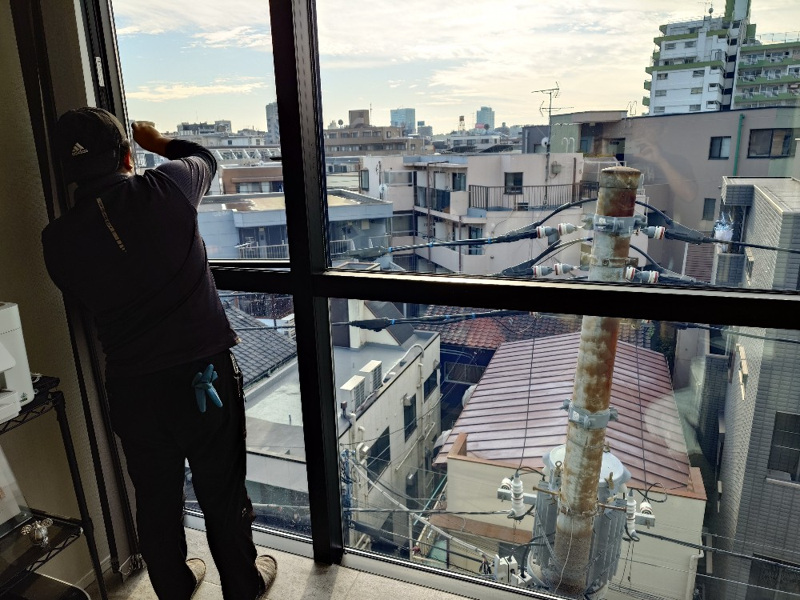
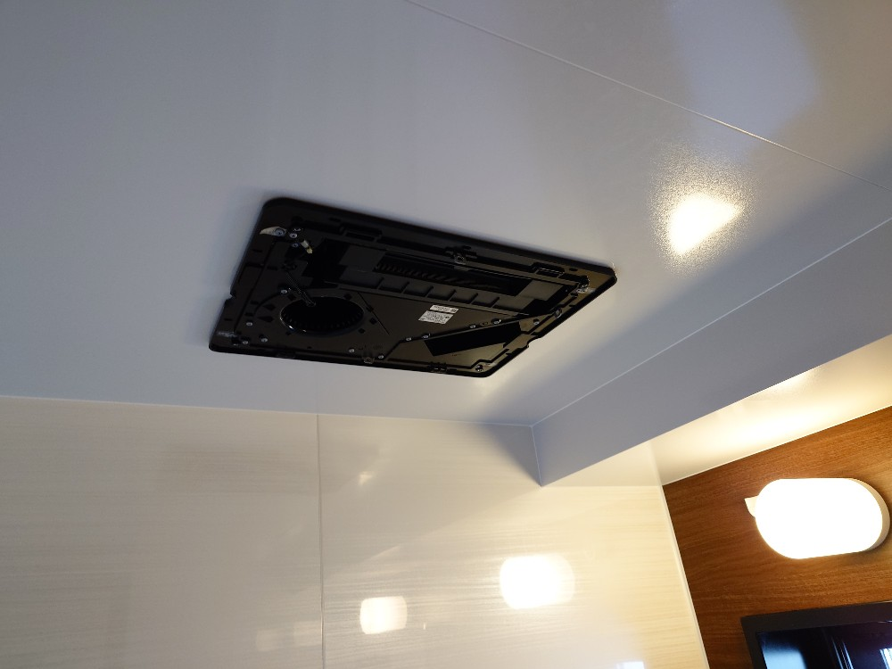
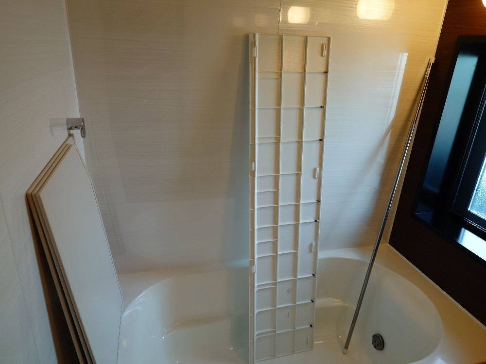
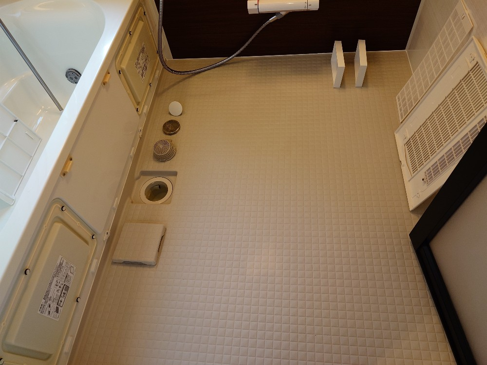
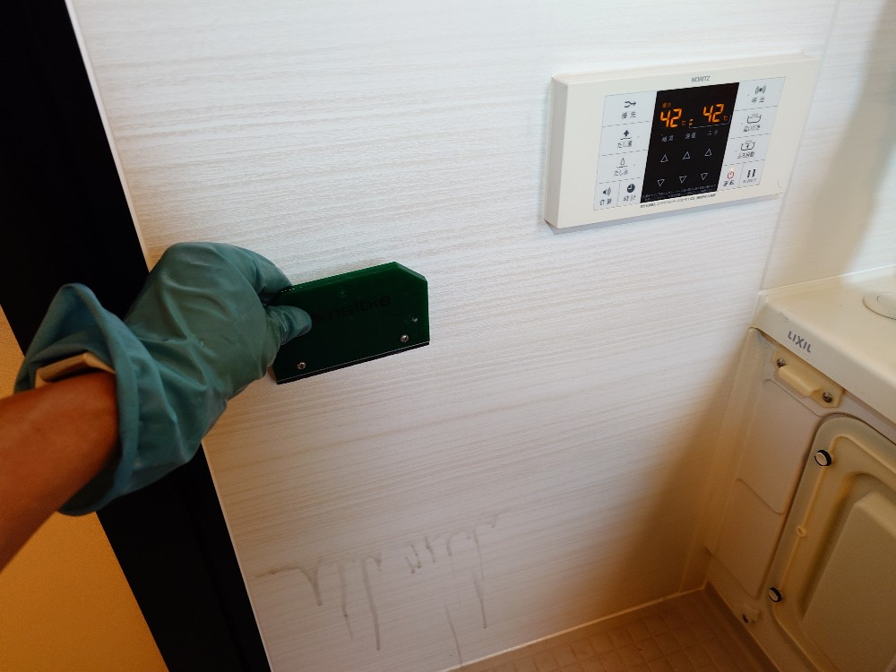
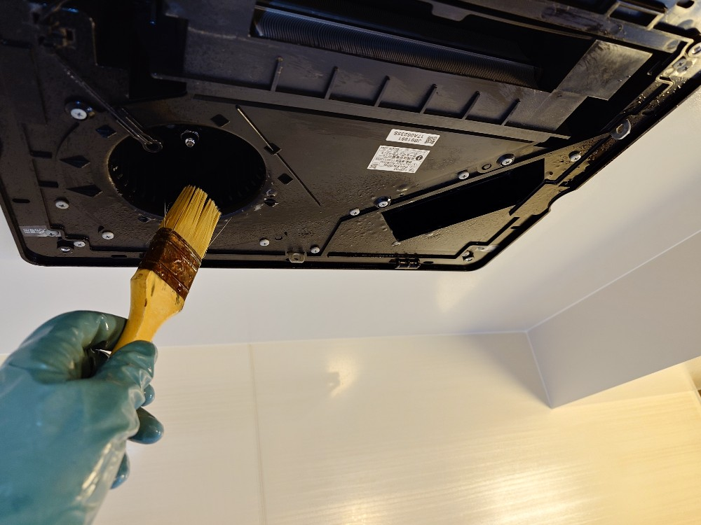
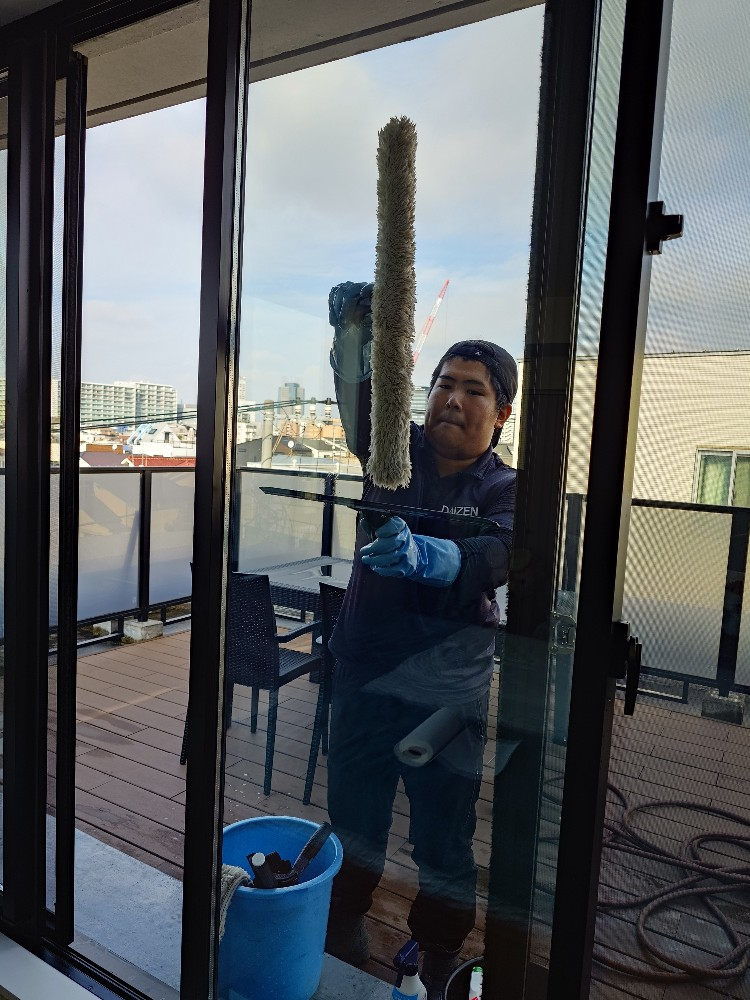
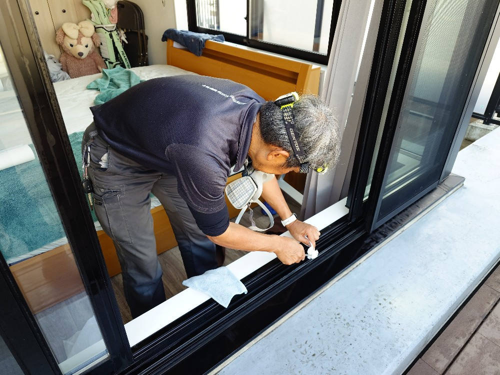
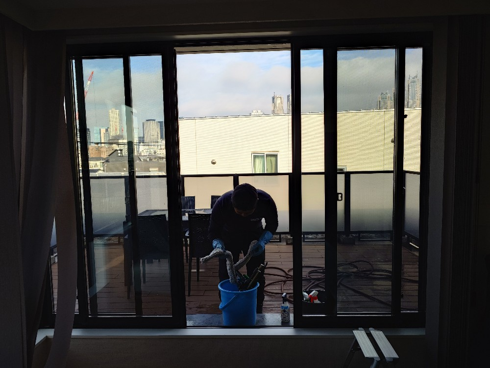
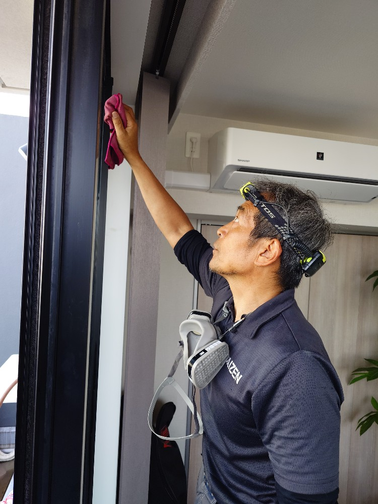

東京都渋谷区本町のとても綺麗なペントハウス3LDKにお住いのF様マンションの、浴室スペシャルクリーニングと窓・サッシ・網戸スペシャルクリーニングをしました!

東京都渋谷区本町のたいへん綺麗なマンションのペントハウスにお住いのF様ご自宅の浴室スペシャルクリーニングと、窓・サッシ・網戸クリーニングをしました!F様のお部屋はとても綺麗で、かつペントハウスなので窓の配置がとてもカッコいいです。DAIZENプロフェッショナルクリーニングメソッドを駆使して、この素敵な窓空間をピカピカに透き通るパノラマ窓に磨き上げました。浴室スペシャルクリーニングは、4時間以上掛けて隅から隅まで完璧に綺麗に、そして美しく、新品に近い状態に近づける再現クリーニングをしました。素材がよいので、浴室の細部、浴室換気扇の分解した中側、外した蓋の裏側、蛇口の裏側、エプロンの裏側、天井の四隅、窓のサッシ、鏡などに無数に堆積してしまった石鹸カス、スケール汚れ、水垢汚れ、カビ汚れ、ウロコになってしまっているスケールの堆積汚れを、こちらもDAIZENプロフェッショナルクリーニングメソッドを駆使して、じっくり時間を掛けて、隅々まで綺麗に除去してクリーニングしました。すっかり綺麗になりF様に喜んで頂きました!








